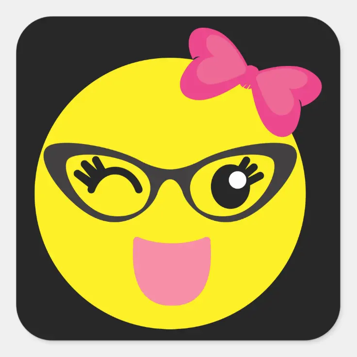

This post explains two ways to insert emojis into a quarto blog.1

1. Visual Editor
One way to add emojis to a quarto blog posts is from the ‘Visual’ editor in R Studio, select the Insert tab \(\rightarrow\) ‘Special Characters’ \(\rightarrow\) ‘Insert Emoji …’ and then selecting you desired emoji from a large list.
2. Include 'from: markdown+emoji' in Header
The second way to add emoji’s into a quarto blog is to include ‘from: markdown+emoji’ in the .qmd header, and then type the name of the emoji you want to include encased in colons as shown below:
:grinning: \(\rightarrow\) üòÄ
:smile: \(\rightarrow\) üòÑ
:heart: \(\rightarrow\) ❤️
:thumbsup: \(\rightarrow\) üëç
:call_me_hand: \(\rightarrow\) ü§ô